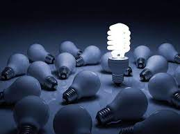
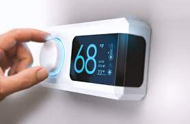
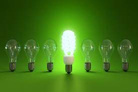

Turn off lights and appliances when not in use
One of the simplest ways to save energy is to turn off lights and appliances
when they are not in use. This is a habit that many of us overlook, but it can significantly
reduce energy consumption and lower energy bills. Even when they are turned off, many
devices continue to use standby power, which can add up over time. This is known as phantom
or vampire power. Unplugging electronics when not in use is also important to avoid standby
power consumption. For example, cell phone chargers can continue to consume electricity even
when not actively charging a device.

Use energy-efficient appliances
Energy-efficient appliances are designed to
use less energy while still providing the same functionality as standard appliances. They
often cost more upfront, but the investment can pay off in the long run due to lower energy
usage. Energy-efficient appliances typically carry an ENERGY STAR label, which means they
meet energy efficiency guidelines set by the U.S. Environmental Protection Agency (EPA).
Some energy-efficient appliances, like refrigerators and washing machines, may also qualify
for rebates or other financial incentives. These incentives can help offset the higher
upfront cost of these appliances.

Adjust thermostat settings
Heating and cooling are typically the largest
energy expenses in a home, so adjusting thermostat settings can help reduce energy
consumption and lower energy bills. The EPA recommends setting the thermostat to 68°F (20°C)
during the winter and 78°F (26°C) during the summer. For each degree you adjust the
thermostat in the opposite direction, you can save up to 2% on your energy bill.
Programmable thermostats are another option that can help reduce energy consumption. These
thermostats can be programmed to automatically adjust the temperature based on your schedule
and preferences.

Use Natural Lights
Using natural light instead of artificial lighting is an easy way to save
energy and reduce your carbon footprint. During the day, open curtains and blinds to allow
sunlight into your home. This can also help reduce the need for artificial lighting, which
can help lower energy bills.
In addition to being energy-efficient, natural light has several other benefits. It can
improve your mood and productivity, as well as your overall health. Exposure to natural
light can help regulate your sleep-wake cycle, which can improve the quality of your sleep.
It can also help reduce the risk of depression and other mood disorders.

Use efficient lighting
Energy-efficient lighting is another way to reduce energy consumption and
lower energy bills. LED lights are one of the most efficient lighting options available
today. They use up to 75% less energy than traditional incandescent bulbs and can last up to
25 times longer. While LED lights may be more expensive upfront, they can save money in the
long run due to their lower energy usage and longer lifespan. Another option is compact
fluorescent bulbs, which use up to 75% less energy than incandescent bulbs and last up to 10
times longer.
Another way to use efficient lighting is by installing motion sensor lights in rooms such as
the bathroom, pantry, or closet. These lights only turn on when someone is in the room,
helping to reduce energy consumption and electricity bills. Similarly, timers can be
installed for outdoor lighting, ensuring they turn on only when needed.